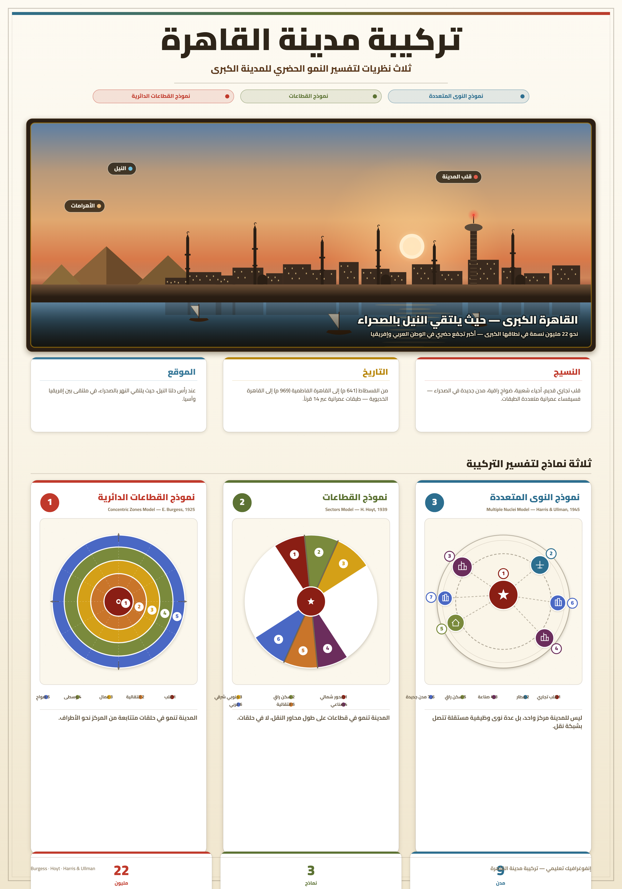
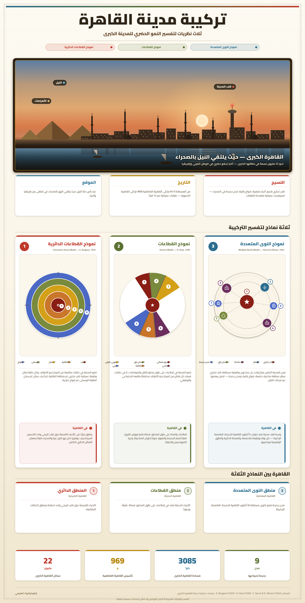

تمارين – تركيبة المدينة: دراسة حالة القاهرة
- الموضع:
- يُحدَّد بنوع التضاريس المحلية حيث تقع المدينة: على ربوة، على هضبة، على سهل، على ضفة وادٍ... والموضع علاقة المدينة بالتضاريس المحلية، ويفسر نشأة المدينة الأولى واتجاه نموها، فالمدينة على ضفة وادٍ تنمو على طول الوادي، والمدينة على ربوة تنمو حولها.
- الموقع:
- يُحدَّد بالنسبة إلى محيط المدينة البعيد: بالنسبة إلى الإقليم، إلى الواجهات البحرية، إلى الحدود... وهو علاقة المدينة بمحيطها البعيد، ويحدد أهميتها الاستراتيجية والاقتصادية، مثل قربها من البحر أو الحدود أو الطرق التجارية الكبرى.
- الحي:
- جزء من المدينة، قد يكون مركزياً أو طرفياً، يتميز بوحدة المشهد المتمثلة في نوعية المباني والتجهيزات، وكذلك بالمحتوى الاجتماعي وبوظائفه الإدارية أو التجارية أو الصناعية أو السكنية والترفيهية أو الجامعية... وهذا التنوع يساعد على فهم بنية المدينة.
- الضاحية:
- حي أو مجموعة أحياء متصلة أو منفصلة مجاليّاً عن المركز، تأوي السكان والأنشطة التي غادرت المركز، وترتبط «بالمركز» وبضواحٍ أخرى بتنقلات يومية للعمل وللدراسة وللترفيه وللتسوق وللخدمات الإدارية. والضاحية ليست منفصلة تماماً عن المركز، بل ترتبط به عبر تنقلات يومية.
- الأرياض:
- أحياء خارج النواة (أي خارج الأسوار الأصلية للمدينة)، نشأت نتيجة امتداد المدينة على طول محاور النقل. والأرياض تمثل امتداداً عمرانياً غير مركزي، نشأت على طول محاور النقل، وهذا يبيّن أهمية الطرق في توجيه النمو العمراني.
| الاتجاه | أهم المشاريع والمدن الجديدة | عدد المشاريع المذكورة |
|---|---|---|
| الشرق | مدينة نصر، العاشر من رمضان، القاهرة الجديدة | 3 |
| الغرب | 6 أكتوبر، الشيخ زايد | 2 |
| الشمال | شبرا الخيمة، القليوبية | 2 |
| الجنوب | حلوان، 15 مايو | 2 |
المصدر: معطيات الدرس حول اتجاه توسع مدينة القاهرة


تتكون تركيبة مدينة القاهرة من قسمين رئيسيين: الأحياء المركزية والأحياء الطرفية، ترتبط بينها علاقات ثنائية الاتجاه عبر أدفاق سكانية واقتصادية وثقافية وترفيهية. فالأحياء المركزية تشمل النواة الأصلية (القاهرة الإسلامية، الحسين، الأزهر، مصر القديمة) التي تتميز بكثافة بنائية عالية وطابع إسلامي عريق، إلى جانب أحياء سكنية مركزية وراقية وعمارات متوسطة وأحياء عشوائية ومناطق صناعية. أما الأحياء الطرفية فتشمل الأرياض التي نشأت على طول محاور النقل، والضواحي السكنية التي تقع على أطراف القاهرة خارج النواة المركزية في المناطق الصحراوية شرق وغرب المدينة، وتضم عمارات سكنية حديثة ومشاريع إسكان خرسانية تؤوي الطبقات المتوسطة والفقيرة، والضواحي الصناعية مثل حلوان وشبرا الخيمة والعاشر من رمضان التي بعدت عن المركز بسبب ارتفاع قيمة الأرض والتلوث والحاجة إلى مساحات كبيرة. وتترابط هذه الأجزاء عبر أدفاق يومية للعمل والدراسة والخدمات والترفيه، مما يجعل المدينة مجالاً غير متجانس لكنه متكامل وظيفياً.
- مقدمة: تقديم القاهرة كأكبر مدينة في العالم العربي وأحد أكبر التجمعات الحضرية.
- تطوير: أولاً. الازدواجية العمرانية (النواة القديمة والجزء الحديث)؛ ثانياً. المكونات المركزية والطرفية؛ ثالثاً. انعكاسات التوسع على الأراضي الفلاحية.
- خاتمة: الحصيلة العامة وضرورة التخطيط العمراني المستدام.
مقدمة
تُعدّ مدينة القاهرة أكبر مدينة في العالم العربي وإحدى أكبر التجمعات الحضرية في إفريقيا والشرق الأوسط، إذ يتجاوز عدد سكان تجمعها الحضري 22 مليون نسمة سنة 2023. وتتميز هذه المدينة العريقة بتركيبة معقدة ومجال غير متجانس، يعكس تاريخها الطويل وتطورها الحديث.
تطوير
أولاً. الازدواجية العمرانية في القاهرة
تنقسم القاهرة إلى جزأين: جزء عتيق «المدينة» يمثل النواة الأصلية حيث يحتل الجامع المركز وتنتظم من حوله الأسواق والمساكن، ويشمل القاهرة الإسلامية والحسين والأزهر ومصر القديمة، ويتميز بكثافة بنائية عالية ومبانٍ متلاصقة ومآذن وقباب. وجزء حديث من النمط الغربي ظهر غالباً في فترة الاستعمار، ويتميز بمبانٍ عالية وطرق واسعة. وهذا الانقسام يظهر في النسيج العمراني والوظائف، ويجعل المدينة مجالاً غير متجانس.
ثانياً. المكونات المركزية والطرفية للقاهرة
تتكون القاهرة من أحياء مركزية تشمل أحياء سكنية مركزية وأحياء راقية وعمارات متوسطة وأحياء عشوائية ومناطق صناعية ومقابر مستقلة وسكناً مخططاً ومشاريع سكنية جديدة. كما تتكون من أحياء طرفية تشمل الأرياض (أحياء خارج النواة على محاور النقل) والضواحي السكنية (على أطراف القاهرة في المناطق الصحراوية شرق وغرب المدينة، وتضم عمارات حديثة ومشاريع إسكان خرسانية) والضواحي الصناعية (حلوان، شبرا الخيمة، العاشر من رمضان) التي بعدت عن المركز بسبب ارتفاع قيمة الأرض والتلوث والحاجة إلى مساحات كبيرة.
ثالثاً. انعكاسات التوسع على الأراضي الفلاحية
يتسع التجمع الحضري للقاهرة في كل الاتجاهات (شرقاً: مدينة نصر والعاشر من رمضان والقاهرة الجديدة، غرباً: 6 أكتوبر والشيخ زايد، شمالاً: شبرا الخيمة والقليوبية، جنوباً: حلوان و15 مايو)، مما يؤدي إلى تآكل الأراضي الزراعية الخصبة في الوادي والدلتا وتحويلها إلى مناطق عمرانية، وانخفاض الإنتاج الزراعي، وتلوث التربة، وتغير استخدامات الأرض. وهذا التوسع يمثل خطراً على الأمن الغذائي والبيئة، لأنه يؤدي إلى فقدان أجود الأراضي الزراعية.
خاتمة
هكذا تتعدد مكونات مدينة القاهرة وتتداخل بين المركز والأطراف، وتترابط عبر أدفاق سكانية واقتصادية وثقافية وترفيهية، لكن هذا التوسع المتسارع يطرح تحديات كبيرة أمام استدامة المدينة والحفاظ على أراضيها الفلاحية، مما يستوجب وضع سياسات تهيئة ترابية عقلانية وتخطيط عمراني مستدام.
الخط الزمني: 969م: تأسيس القاهرة الفاطمية ... القرن 19: إنشاء القاهرة الخديوية ... القرن 20: بداية التوسع نحو الصحراء ... القرن 21: إنجاز المدن الجديدة شرق وغرب القاهرة.